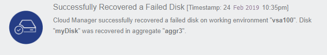
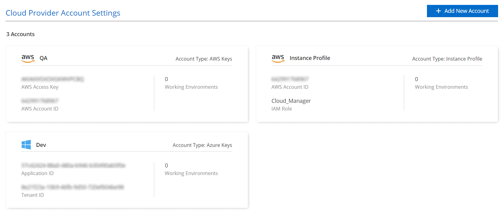

Release notes
Release notes
What's new in Cloud Manager 3.6
 Suggest changes
Suggest changes
OnCommand Cloud Manager typically introduces a new release every month to bring you new features, enhancements, and bug fixes.

|
Looking for a previous release? What's new in 3.5 What's new in 3.4 |
Support for the AWS C2S Environment (2 May 2019)
Cloud Volumes ONTAP 9.5 and Cloud Manager 3.6.4 are now available to the U.S. Intelligence Community (IC) through the AWS Commercial Cloud Services (C2S) environment. You can deploy HA pairs and single node systems in C2S.
Cloud Manager 3.6.6 (1 May 2019)
Support for 6 TB disks in AWS
You can now choose an EBS disk size of 6 TB with Cloud Volumes ONTAP for AWS. With the recent increased performance of General Purpose SSDs, a 6 TB disk is now the best choice for maximum performance.
This change is supported with Cloud Volumes ONTAP 9.5, 9.4, and 9.3.
Support for new disk sizes with single node systems in Azure
You can now use 8 TB, 16 TB, and 32 TB disks with single node systems in Azure. The increased disk sizes enable you to reach up to 368 TB of system capacity with disks alone when using the Premium or BYOL licenses.
This change is supported with Cloud Volumes ONTAP 9.5, 9.4, and 9.3.
Support for Standard SSDs with single node systems in Azure
Standard SSD Managed Disks are now supported with single node systems in Azure. These disks provide a level of performance in between Premium SSDs and Standard HDDs.
This change is supported with Cloud Volumes ONTAP 9.5, 9.4, and 9.3.
Automatic discovery of Kubernetes clusters created with the NetApp Kubernetes Service
Cloud Manager can now automatically discover the Kubernetes clusters that you deploy using the NetApp Kubernetes Service. This enables you to connect the Kubernetes clusters to your Cloud Volumes ONTAP systems so you can use them as persistent storage for your containers.
The following image shows an automatically discovered Kubernetes cluster. The "Go to NKS" link brings you directly to the NetApp Kubernetes Service.

Ability to configure an NTP server
You can now configure Cloud Volumes ONTAP to use a Network Time Protocol (NTP) server. Specifying an NTP server synchronizes the time between the systems in your network, which can help prevent issues due to time differences.
Specify an NTP server using the Cloud Manager API or from the user interface when you set up a CIFS server:
-
The Cloud Manager APIs enable you to specify any address for the NTP server. Here's the API for a single-node system in AWS:

-
When configuring a CIFS server, the Cloud Manager user interface enables you to specify an NTP server that uses the Active Directory domain. If you need to use a different address, then you should use the API.
The following image shows the NTP Server field, which is available when setting up CIFS.

Cloud Manager 3.6.5 (2 Apr 2019)
Cloud Manager 3.6.5 includes the following enhancements.
Kubernetes enhancements
We made a few enhancements that make it easier for you to use Cloud Volumes ONTAP as persistent storage for containers:
-
You can now add multiple Kubernetes clusters to Cloud Manager.
This enables you to connect different clusters to different Cloud Volumes ONTAP systems and multiple clusters to the same Cloud Volumes ONTAP system.
-
When you connect a cluster, you can now set Cloud Volumes ONTAP as the default storage class for the Kubernetes cluster.
When a user creates a persistent volume, the Kubernetes cluster can use Cloud Volumes ONTAP as the backend storage by default:

-
We changed how Cloud Manager names the Kubernetes storage classes so they are more easily identifiable:
-
netapp-file: for binding a Persistent Volume to a single-node Cloud Volumes ONTAP system
-
netapp-file-redundant: for binding a Persistent Volume to a Cloud Volumes ONTAP HA pair
-
-
The version of NetApp Trident that Cloud Manager installs was updated to the latest version.
NetApp Support Site accounts are now managed at the system level
It's now easier to manage NetApp Support Site accounts in Cloud Manager.
In previous releases, you needed to link a NetApp Support Site account to a specific tenant. The accounts are now managed at the Cloud Manager system level in the same place that you manage cloud provider accounts. This change gives you the flexibility to choose between multiple NetApp Support Site accounts when registering your Cloud Volumes ONTAP systems.

When you create a new working environment, you simply select the NetApp Support Site account to register the Cloud Volumes ONTAP system with:

When Cloud Manager updates to 3.6.5, it automatically adds NetApp Support Site accounts for you, if you had previously linked tenants with an account.
AWS transit gateways can enable access to floating IP addresses
An HA pair in multiple AWS Availability Zones uses floating IP addresses for NAS data access and for management interfaces. Until now, those floating IP addresses haven't been accessible from outside the VPC where the HA pair resides.
We verified that you can use an AWS transit gateway to enable access to the floating IP addresses from outside the VPC. That means NetApp management tools and NAS clients that are outside the VPC can access the floating IPs and take advantage of automatic failover.
Azure resource groups are now locked
Cloud Manager now locks Cloud Volumes ONTAP resource groups in Azure when it creates them. Locking resource groups prevents users from accidentally deleting or modifying critical resources.
NFS 4 and NFS 4.1 are now enabled by default
Cloud Manager now enables the NFS 4 and NFS 4.1 protocols on every new Cloud Volumes ONTAP system that it creates. This change saves you time because you no longer need to manually enable those protocols yourself.
A new API enables you to delete ONTAP Snapshot copies
You can now delete Snapshot copies of read-write volumes by using a Cloud Manager API call.
Here's an example of the API call for an HA system in AWS:

Similar API calls are available for single-node systems in AWS and for single-node and HA systems in Azure.
Cloud Manager 3.6.4 update (18 Mar 2019)
Cloud Manager was updated to support the 9.5 P1 patch release for Cloud Volumes ONTAP. With this patch release, HA pairs in Azure are now Generally Available (GA).
See the Cloud Volumes ONTAP 9.5 Release Notes for additional details, including important information about Azure region support for HA pairs.
Cloud Manager 3.6.4 (3 Mar 2019)
Cloud Manager 3.6.4 includes the following enhancements.
AWS-managed encryption with a key from another account
When launching a Cloud Volumes ONTAP system in AWS, you can now enable AWS-managed encryption using a Customer Master Key (CMK) from another AWS user account.
The following images show how to select the option when creating a new working environment:

Recovery of failed disks
Cloud Manager now tries to recover failed disks from Cloud Volumes ONTAP systems. Successful attempts are noted in email notification reports. Here's a sample notification:

|
|
You can enable notification reports by editing your user account. |
Azure storage accounts enabled for HTTPS when data tiering to Blob containers
When you set up a Cloud Volumes ONTAP system to tier inactive data to an Azure Blob container, Cloud Manager creates an Azure storage account for that container. Starting in this release, Cloud Manager now enables new storage accounts with secure transfer (HTTPS). Existing storage accounts continue to use HTTP.
Cloud Manager 3.6.3 (4 Feb 2019)
Cloud Manager 3.6.3 includes the following enhancements.
Support for Cloud Volumes ONTAP 9.5 GA
Cloud Manager now supports the General Availability (GA) release of Cloud Volumes ONTAP 9.5. This includes support for M5 and R5 instances in AWS. For more details about the 9.5 release, see the Cloud Volumes ONTAP 9.5 Release Notes.
368 TB capacity limit for all Premium and BYOL configurations
The system capacity limit for Cloud Volumes ONTAP Premium and BYOL is now 368 TB across all configurations: single node and HA in both AWS and Azure. This change applies to Cloud Volumes ONTAP 9.5, 9.4, and 9.3 (AWS only with 9.3).
For some configurations, disk limits prevent you from reaching the 368 TB capacity limit by using disks alone. In those cases, you can reach the 368 TB capacity limit by tiering inactive data to object storage. For example, a single node system in Azure could have 252 TB of disk-based capacity, which would allow up to 116 TB of inactive data in Azure Blob storage.
For information about disk limits, refer to storage limits in the Cloud Volumes ONTAP Release Notes.
Support for new AWS regions
Cloud Manager and Cloud Volumes ONTAP are now supported in the following AWS regions:
-
Europe (Stockholm)
Single node systems only. HA pairs are not supported at this time.
-
GovCloud (US-East)
This is in addition to support for the AWS GovCloud (US-West) region.
Support for S3 Intelligent-Tiering
When you enable data tiering in AWS, Cloud Volumes ONTAP tiers inactive data to the S3 Standard storage class by default. You can now change the tiering level to the Intelligent Tiering storage class. This storage class optimizes storage costs by moving data between two tiers as data access patterns change. One tier is for frequent access and the other is for infrequent access.
Just like in previous releases, you can also use the Standard-Infrequent Access tier and the One Zone-Infrequent Access tier.
Ability to disable data tiering on the initial aggregate
In previous releases, Cloud Manager automatically enabled data tiering on the initial Cloud Volumes ONTAP aggregate. You can now choose to disable data tiering on this initial aggregate. (You can enable or disable data tiering on subsequent aggregates, as well.)
This new option is available when choosing the underlying storage resources. The following image shows an example when launching a system in AWS:

Recommended EC2 instance type now t3.medium for Cloud Manager
The instance type for Cloud Manager is now t3.medium when deploying Cloud Manager in AWS from NetApp Cloud Central. It is also the recommended instance type in the AWS Marketplace. This change enables support in the latest AWS regions and reduces instance costs. The recommended instance type was previously t2.medium, which is still supported.
Postponement of scheduled shutdowns during data transfers
If you scheduled an automatic shutdown of your Cloud Volumes ONTAP system, Cloud Manager now postpones the shutdown if an active data transfer is in progress. Cloud Manager shuts down the system after the transfer is complete.
Cloud Manager 3.6.2 (2 Jan 2019)
Cloud Manager 3.6.2 includes new features and enhancements.
AWS spread placement group for Cloud Volumes ONTAP HA in a single AZ
When you deploy Cloud Volumes ONTAP HA in a single AWS Availability Zone, Cloud Manager now creates an AWS spread placement group and launches the two HA nodes in that placement group. The placement group reduces the risk of simultaneous failures by spreading the instances across distinct underlying hardware.

|
This feature improves redundancy from a compute perspective and not from disk failure perspective. |
Cloud Manager requires new permissions for this feature. Ensure that the IAM policy that provides Cloud Manager with permissions includes the following actions:
"ec2:CreatePlacementGroup",
"ec2:DeletePlacementGroup"You can find the entire list of required permissions in the latest AWS policy for Cloud Manager.
Ransomware protection
Ransomware attacks can cost a business time, resources, and reputation. Cloud Manager now enables you to implement the NetApp solution for ransomware, which provides effective tools for visibility, detection, and remediation.
-
Cloud Manager identifies volumes that are not protected by a Snapshot policy and enables you to activate the default Snapshot policy on those volumes.
Snapshot copies are read-only, which prevents ransomware corruption. They can also provide the granularity to create images of a single file copy or a complete disaster recovery solution.
-
Cloud Manager also enables you to block common ransomware file extensions by enabling ONTAP's FPolicy solution.

New data replication policies
Cloud Manager includes five new data replication policies that you can use for data protection.
Three of the policies configure disaster recovery and long-term retention of backups on the same destination volume. Each policy provides a different backup retention period:
-
Mirror and Backup (7 year retention)
-
Mirror and Backup (7 year retention with more weekly backups)
-
Mirror and Backup (1 year retention, monthly)
The remaining policies provide more options for long-term retention of backups:
-
Backup (1 month retention)
-
Backup (1 week retention)
Simply drag-and-drop a working environment to select one of the new policies.
Volume access control for Kubernetes
You can now configure the export policy for Kubernetes Persistent Volumes. The export policy can enable access to clients if the Kubernetes cluster is in a different network than the Cloud Volumes ONTAP system.
You can configure the export policy when you connect a working environment to a Kubernetes cluster and by editing an existing volume.
Cloud Manager 3.6.1 (4 Dec 2018)
Cloud Manager 3.6.1 includes new features and enhancements.
Support for Cloud Volumes ONTAP 9.5 in Azure
Cloud Manager now supports the Cloud Volumes ONTAP 9.5 release in Microsoft Azure, which includes a preview of high-availability (HA) pairs. You can request a preview license for an Azure HA pair by contacting us at ng-Cloud-Volume-ONTAP-preview@netapp.com.
For more details about the 9.5 release, see the Cloud Volumes ONTAP 9.5 Release Notes.
New Azure permissions required for Cloud Volumes ONTAP 9.5
Cloud Manager requires new Azure permissions for key features in the Cloud Volumes ONTAP 9.5 release. To ensure that Cloud Manager can deploy and manage Cloud Volumes ONTAP 9.5 systems, you should update your Cloud Manager policy by adding the following permissions:
"Microsoft.Network/loadBalancers/read",
"Microsoft.Network/loadBalancers/write",
"Microsoft.Network/loadBalancers/delete",
"Microsoft.Network/loadBalancers/backendAddressPools/read",
"Microsoft.Network/loadBalancers/backendAddressPools/join/action",
"Microsoft.Network/loadBalancers/frontendIPConfigurations/read",
"Microsoft.Network/loadBalancers/loadBalancingRules/read",
"Microsoft.Network/loadBalancers/probes/read",
"Microsoft.Network/loadBalancers/probes/join/action",
"Microsoft.Network/routeTables/join/action"
"Microsoft.Authorization/roleDefinitions/write",
"Microsoft.Authorization/roleAssignments/write",
"Microsoft.Web/sites/*"
"Microsoft.Storage/storageAccounts/delete",
"Microsoft.Storage/usages/read",You can find the entire list of required permissions in the latest Azure policy for Cloud Manager.
Cloud Provider Accounts
It's now easier to manage multiple AWS and Azure accounts in Cloud Manager by using Cloud Provider Accounts.
In previous releases, you needed to specify cloud provider permissions for each Cloud Manager user account. The permissions are now managed at the Cloud Manager system level by using Cloud Provider Accounts.

When you create a new working environment, you simply select the account in which you want to deploy the Cloud Volumes ONTAP system:

When you upgrade to 3.6.1, Cloud Manager automatically creates Cloud Provider Accounts for you, based on your current configuration. If you have scripts, backwards compatibility is in place so nothing breaks.
Enhancements to the AWS Cost report
The AWS Cost report now provides more information and is easier to set up.
-
The report breaks down the monthly resource costs associated with running Cloud Volumes ONTAP in AWS. You can view monthly costs for compute, EBS storage (including EBS snapshots), S3 storage, and data transfers.
-
The report now shows cost savings when you tier inactive data to S3.
-
We also simplified how Cloud Manager obtains cost data from AWS.
Cloud Manager no longer needs access to billing reports that you store in an S3 bucket. Instead, Cloud Manager uses the Cost Explorer API. You just need to ensure that the IAM policy that provides Cloud Manager with permissions includes the following actions:
"ce:GetReservationUtilization", "ce:GetDimensionValues", "ce:GetCostAndUsage", "ce:GetTags"These actions are included in the latest NetApp-provided policy. New systems deployed from NetApp Cloud Central automatically include these permissions.

Support for new Azure regions
You can now deploy Cloud Manager and Cloud Volumes ONTAP in the France Central region.
Cloud Manager 3.6 (4 Nov 2018)
Cloud Manager 3.6 includes a new feature.
Using Cloud Volumes ONTAP as persistent storage for a Kubernetes cluster
Cloud Manager can now automate the deployment of NetApp Trident on a single Kubernetes cluster so you can use Cloud Volumes ONTAP as persistent storage for containers. Users can then request and manage Persistent Volumes using native Kubernetes interfaces and constructs, while taking advantage of ONTAP's advanced data management features without having to know anything about it.